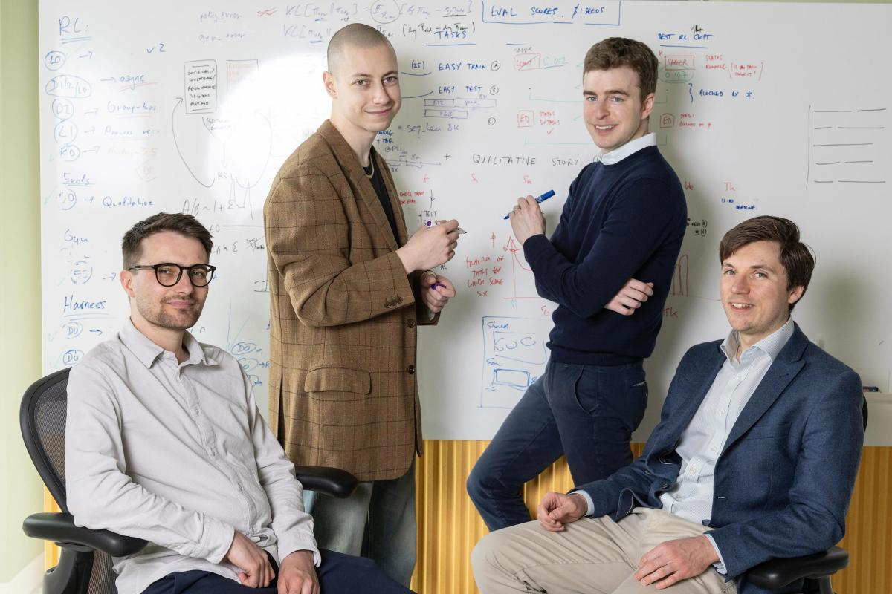

倫敦團隊 12 人、以 AI 複製論文能力震驚業界

倫敦 AI 新創 Inherent Labs 由 Google DeepMind 前員工創立，僅成立數週即以 5,000 萬美元種子輪完成 stealth 模式。旗下 AI 代理 Faraday 在無需提前告知答案的情況下，能獨立重現已發表科學論文的發現，表現超越體量更大的 Anthropic 和 OpenAI 模型。
Faraday 被稱為 AI「teammate」，核心能力是論文複製（paper replication）——在不看答案的前提下重現已發表論文的發現，這本是人類科學家在博士訓練階段的標準練習。
Faraday 在重現已發表科學論文結論的任務上，擊敗了 Anthropic 和 OpenAI 的更大模型。儘管外界可能認為這只是炫技，但 Inherent 的最終目標更遠大——構建能發現新知識的 AI。
Inherent 目前僅有 12 名員工，全部在倫敦 King's Cross 的辦公室現場辦公。這個曾經衰落的街區，因 Google DeepMind 的進駐已成為全球 AI 重鎮之一。
Inherent 成立僅數週便以 5,000 萬美元完成種子輪，隨即交付實際成果。相比獲得更多資金的競爭對手仍停留在展示概念階段，Inherent 已開始搶占市場注意力。
論文複製任務過去被視為 AI 能力的試金石，Inherent 的成果顯示，小型專精團隊若方向正確，有機會在特定任務上超越資源豐富的大廠。
「許多 PhD 學生其實都是從複製論文開始的。」
— Edward Hughes，Inherent 共同創辦人兼首席科學家此案反映 AI 發展正從「模型越大越好」的敘事，轉向針對特定任務的深度優化。DeepMind 校友的低調路線與 Hughes 強調「倫敦是 AI 發展最佳地點」，也為英國 AI 產業注入新敘事。
| 維度 | Inherent Faraday | Anthropic / OpenAI 大模型 |
|---|---|---|
| 論文複製能力 | 領先 | 落後 |
| 團隊規模 | 12 人（精簡） | 數千人（龐大） |
| 資金規模 | 5,000 萬美元（種子輪） | 數十億美元（巨型） |
| 運作模式 | 全員現場辦公 | 混合 / 遠端 |
| 任務焦點 | 論文複製（垂直深耕） | 通用能力（廣泛覆蓋） |